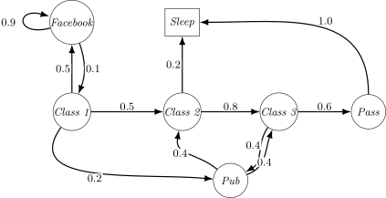
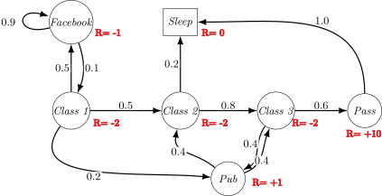

"The future is independent of the past given the present"
A state is Markov if and only if \[ \mathbb{P}[S_{t+1} \mid S_t] = \mathbb{P} [S_{t+1} \mid S_1, \ldots, S_t] \]
A Markov Process (or Markov Chain) is a tuple \(\langle \mathcal{S}, \mathcal{P}\rangle\)

Sample episodes for Student Markov Chain starting from \(S_1 = C1\): \[ S_1, S_2, \ldots, S_T \]
\[ \mathcal{P} = \begin{array}{c@{\;}c} & \begin{array}{ccccccc} C1 & C2 & C3 & \textit{Pass} & \textit{Pub} & \textit{FB} & \textit{Sleep} \end{array} \\[0.3em] \begin{array}{c} C1 \\ C2 \\ C3 \\ \textit{Pass} \\ \textit{Pub} \\ \textit{FB} \\ \textit{Sleep} \end{array} & \left( \begin{array}{ccccccc} & 0.5 & & & & 0.5 & \\ & & 0.8 & & & & 0.2 \\ & & & 0.6 & 0.4 & & \\ & & & & & & 1.0 \\ 0.2 & 0.4 & 0.4 \\ 0.1 & & & & & 0.9 & \\ & & & & & & 1.0 \end{array} \right) \end{array} \]
A Markov Reward Process is a tuple \((S, \mathcal{P}, \mathcal{R}, \gamma)\)

The return \(G_t\) is the total discounted reward from time-step \(t\) \[ G_t = R_{t+1} + \gamma R_{t+2} + ... = \sum_{k=0}^{\infty} \gamma^k R_{t+k+1} \]
Would you like me to create a summary table of the key differences between Markov Processes, MRPs, and MDPs based on this document?